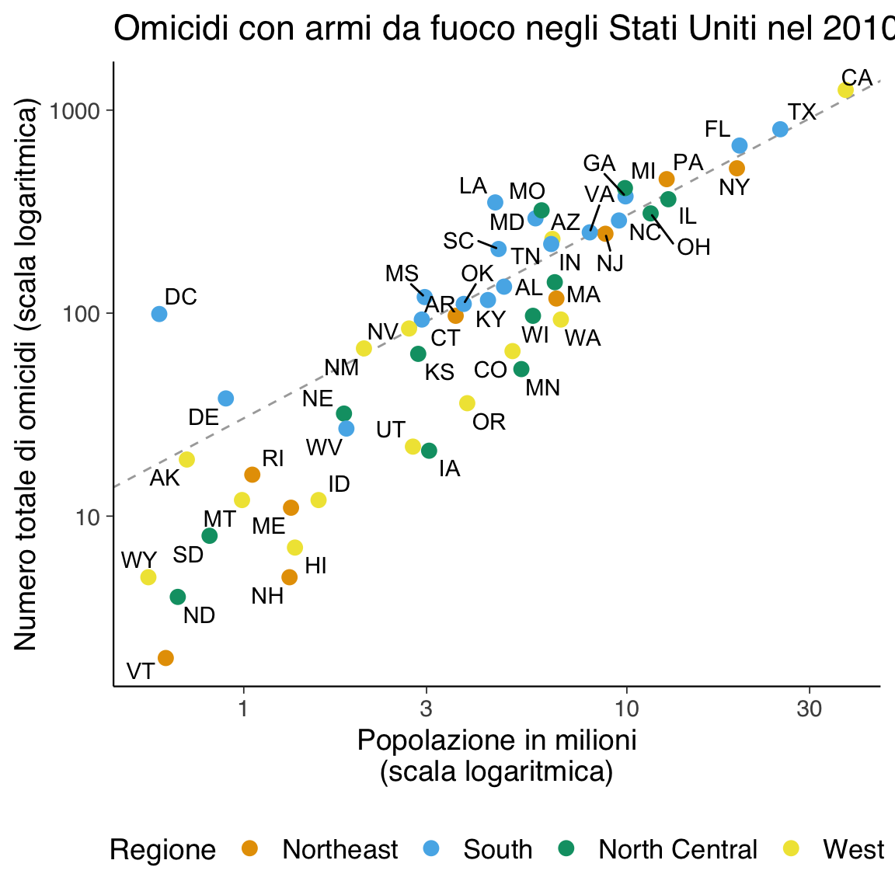

here::here("code", "_common.R") |>
source()
# Load packages
if (!requireNamespace("pacman")) install.packages("pacman")
pacman::p_load(dslabs, ggrepel, stringr)18 Principi della visualizzazione dei dati
In questo capitolo imparerai a:
- comunicare i risultati basati sui dati;
- utilizzare ggplot2 per creare grafici personalizzati;
- riconoscere i limiti di alcuni grafici comunemente utilizzati e comprendere perché evitarli.
Prerequisiti
- Leggere Testing Statistical Charts: What Makes a Good Graph? (Vanderplas, Cook, and Hofmann 2020). Questo articolo descrive le migliori pratiche per la creazione di grafici.
- Consultare il capitolo Data visualization di Wickham et al. (2023). Questo capitolo fornisce una panoramica degli aspetti fondamentali della visualizzazione dei dati.
- Consultare Data Visualization. A practical introduction di Healy (2018).
- Consultare Fundamentals of Data Visualization di Wilke (2019).
- Leggere il post Open letter to journal editors: dynamite plots must die di Rafael Irizarry.
- Consultare il post The top ten worst graphs di Karl Broman.
- Leggere il capitolo Data Visualization di Introduction to Data Science.
- Visionare Communicating Science Using Visuals: Tips for Scientists.
Preparazione del Notebook
Introduzione
In questo capitolo saranno introdotti i principi fondamentali della visualizzazione dei dati, accompagnati da una descrizione sintetica. Per un approfondimento su ciascun principio, si consiglia di consultare il capitolo Data Visualization del libro Introduction to Data Science.
Un altro aspetto che verrà affrontato riguarda gli errori, i bias, le imprecisioni sistematiche e altri problemi inattesi che spesso influenzano i dati. Questi elementi richiedono una gestione accurata e, poiché possono risultare difficili o impossibili da individuare direttamente in un dataset, la visualizzazione dei dati diventa uno strumento essenziale.
L’aumento della disponibilità di dataset informativi e di strumenti software ha reso la visualizzazione dei dati sempre più rilevante in numerosi ambiti. La visualizzazione dei dati non solo consente di comunicare in modo efficace risultati basati sui dati, ma aiuta anche a motivare ulteriori analisi e a rilevare eventuali errori o imperfezioni.
18.1 Un’immagine Vale Più di Mille Parole
Osservare numeri e stringhe di caratteri che definiscono un dataset raramente è utile. Per convincerci di questo, stampiamo e osserviamo la tabella dei dati sugli omicidi con armi da fuoco negli Stati Uniti:
head(murders)
#> state abb region population total
#> 1 Alabama AL South 4779736 135
#> 2 Alaska AK West 710231 19
#> 3 Arizona AZ West 6392017 232
#> 4 Arkansas AR South 2915918 93
#> 5 California CA West 37253956 1257
#> 6 Colorado CO West 5029196 65Cosa impariamo guardando questa tabella? Quanto velocemente riusciamo a determinare quali stati hanno le popolazioni più numerose? E quali hanno le più piccole? Quanto è grande uno stato “tipico”? Esiste una relazione tra la dimensione della popolazione e il numero totale di omicidi? Come variano i tassi di omicidio tra le diverse regioni del paese? Per la maggior parte di noi, è piuttosto difficile estrarre queste informazioni semplicemente guardando i numeri. Al contrario, le risposte a tutte queste domande sono immediatamente evidenti osservando questo grafico:

Questo ci ricorda il detto “un’immagine vale più di mille parole”. La visualizzazione dei dati offre un modo potente per comunicare una scoperta basata sui dati. In alcuni casi, la visualizzazione è così convincente che non è necessario alcun follow-up analitico.
Esempio 18.1 Rispondiamo alle domande precedenti sulla base della visualizzazione dei dati.
Quali stati hanno le popolazioni più numerose? Guardando il grafico, possiamo notare immediatamente che gli stati con le popolazioni più alte si trovano verso il lato destro dell’asse x (poiché la scala è logaritmica). Gli stati con le popolazioni più numerose sono California, Texas, e New York.
Quali stati hanno le popolazioni più piccole? Gli stati con le popolazioni più piccole si trovano verso il lato sinistro dell’asse x. Questi includono Wyoming, Vermont, e Alaska.
Quanto è grande uno stato “tipico”? Un modo per stimare una dimensione “tipica” è guardare la densità delle osservazioni sull’asse x. La maggior parte degli stati si trova intorno a un milione di abitanti, ma ci sono anche molti stati con popolazioni comprese tra 5 e 10 milioni di abitanti. Quindi, uno stato “tipico” potrebbe avere una popolazione di circa 5-10 milioni di persone.
Esiste una relazione tra la dimensione della popolazione e il numero totale di omicidi? Sì, esiste una chiara relazione positiva tra la dimensione della popolazione e il numero totale di omicidi. Lo si può vedere dal fatto che gli stati con popolazioni più grandi tendono ad avere un numero maggiore di omicidi. Tuttavia, questa relazione non è perfetta: alcuni stati con popolazioni simili mostrano differenze significative nel numero di omicidi, suggerendo che altri fattori oltre alla popolazione influenzano i tassi di omicidio.
-
Come variano i tassi di omicidio tra le diverse regioni del paese? Il grafico utilizza colori diversi per rappresentare le regioni geografiche degli stati. Osservando la distribuzione dei punti per colore, possiamo notare alcune differenze:
- Sud: Gli stati del Sud tendono ad avere tassi di omicidio più alti rispetto alle altre regioni.
- Nord-Est: Gli stati del Nord-Est mostrano una variazione moderata nei tassi di omicidio, ma in generale sono inferiori a quelli del Sud.
- Ovest: Gli stati dell’Ovest presentano una vasta gamma di tassi di omicidio, con alcuni stati come California e Texas che registrano numeri elevati a causa della loro grande popolazione.
- Midwest: I tassi di omicidio nei stati del Midwest sembrano essere generalmente bassi o moderati.
18.2 Codificare i dati attraverso segnali visivi
Iniziamo con una panoramica dei principali segnali visivi utilizzati per codificare i dati: posizione, lunghezza, angoli, area, luminosità e tonalità del colore. Tra questi, posizione e lunghezza sono i segnali visivi più efficaci e intuitivi, poiché il cervello umano è particolarmente abile nel riconoscere variazioni spaziali. Questo rende la posizione e la lunghezza strumenti potenti per la rappresentazione quantitativa. In altre parole, le persone riescono a confrontare con maggiore precisione altezze e lunghezze (come le barre in un barplot) rispetto ad angoli o aree (come in un grafico a torta).
Angoli e aree, sebbene comunemente usati, sono segnali visivi meno efficaci. Grafici come i pie chart, che si basano su angoli e aree per rappresentare quantità, risultano spesso meno precisi e più difficili da interpretare, specialmente quando le differenze sono piccole. Anche l’uso dell’area, ad esempio nei bubble plot, può distorcere la percezione delle differenze tra i dati, a meno che non venga gestita correttamente. Anche se l’area di una bolla può essere proporzionale al valore rappresentato, la percezione umana tende a sovrastimare le differenze tra aree più grandi.
Luminosità e tonalità del colore sono utili per rappresentare variabili qualitative o categoriali, ma possono risultare difficili da interpretare quando si tratta di confrontare quantità precise. Tuttavia, il colore gioca un ruolo cruciale nelle visualizzazioni multidimensionali, come le heatmap, dove è necessario rappresentare più di due variabili contemporaneamente. È importante, però, usare il colore con attenzione, soprattutto per garantire l’accessibilità a persone con problemi di daltonismo.
Le tabelle sono utili quando si ha una quantità limitata di dati e si richiede una precisione numerica rigorosa. Tuttavia, per set di dati più grandi o per evidenziare tendenze e differenze, i grafici (come i barplot) sono generalmente più efficaci. Le tabelle non offrono lo stesso impatto visivo immediato e rendono più difficile l’individuazione di pattern complessi.
18.2.1 Ulteriori considerazioni sulla scelta della visualizzazione
La scelta della visualizzazione più appropriata dipende sia dalla natura dei dati che dallo scopo della comunicazione. Per esempio:
- Barplot o dot plot sono ideali per confrontare valori quantitativi tra categorie.
- Istogrammi, boxplot e raincloud plots sono più adatti per descrivere la distribuzione di dati continui e fare confronti tra categorie.
- Grafici di dispersione (scatter plot) sono eccellenti per esplorare relazioni tra due variabili continue.
La chiarezza e la leggibilità sono principi fondamentali nella creazione di visualizzazioni efficaci. L’aggiunta di elementi visivi eccessivi, come decorazioni superflue o troppi colori, può distrarre dal messaggio principale. Un buon grafico deve essere semplice, ma allo stesso tempo completo, includendo solo gli elementi visivi necessari per trasmettere il messaggio desiderato.
In conclusione, scegliere i segnali visivi adeguati e il tipo di grafico più appropriato non solo migliora l’accuratezza della comunicazione, ma rende le informazioni più accessibili e comprensibili per il pubblico.
18.3 Quando includere lo zero
Quando si usa la lunghezza come segnale visivo, come nei barplot, è essenziale che l’asse parta da zero. Non farlo può essere fuorviante e far sembrare le differenze più grandi di quanto non siano in realtà. Questo errore viene spesso sfruttato nei media per esagerare differenze apparentemente significative.
Tuttavia, quando si usa la posizione (ad esempio in un grafico a dispersione), non è sempre necessario includere lo zero, soprattutto se l’interesse principale è il confronto tra gruppi rispetto alla variabilità interna.
18.4 Evitare le distorsioni
Una distorsione comune si verifica quando le differenze tra quantità sono rappresentate utilizzando aree, come nei bubble plot, dove il raggio dei cerchi è proporzionale al dato. Il problema è che, poiché l’area di un cerchio è proporzionale al quadrato del raggio, le differenze sembrano molto più ampie di quanto siano realmente. Per evitare queste distorsioni, è meglio utilizzare la posizione o la lunghezza, come in un grafico a barre, per confrontare direttamente le quantità.
18.5 Ordinare le categorie
Quando si visualizzano categorie, come nei barplot o nei boxplot, è opportuno ordinarle in base al valore della variabile di interesse, anziché in ordine alfabetico. Questo aiuta a evidenziare pattern significativi e facilita il confronto tra categorie.
18.6 Evitare i Dynamite Plots
I dynamite plots, che mostrano la media e l’errore standard (o la deviazione standard), sono spesso utilizzati in psicologia ma sono fuorvianti. Questi grafici tendono a esagerare le differenze e possono indurre false interpretazioni. È preferibile mostrare tutti i dati, ad esempio tramite un dot plot, che fornisce un’immagine più chiara della distribuzione dei dati (Butler, 2022).
18.7 Facilitare i confronti
Quando si confrontano due distribuzioni, come in un istogramma, è fondamentale mantenere gli stessi assi per entrambi i grafici. Se le distribuzioni sono presentate su assi con scale diverse, il confronto diventa difficile e potrebbe portare a conclusioni errate. Allineare i grafici verticalmente o orizzontalmente consente di percepire più facilmente le differenze tra i gruppi.
18.8 Trasformazioni logaritmiche
Le trasformazioni logaritmiche sono utili quando si lavora con dati distribuiti su più ordini di grandezza o quando le variazioni tra le quantità sono moltiplicative (West, 2022). L’uso della scala logaritmica in un grafico a barre o a dispersione può ridurre le distorsioni visive e migliorare l’interpretazione dei dati. Questo approccio è particolarmente utile quando alcuni valori estremi potrebbero dominare il grafico, nascondendo dettagli rilevanti.
18.9 Codificare una terza variabile
Per rappresentare tre variabili, è possibile utilizzare un grafico di dispersione con variabili codificate attraverso dimensioni aggiuntive come il colore, la dimensione o la forma dei punti. Ad esempio, in un grafico che confronta aspettativa di vita e reddito, la dimensione dei punti potrebbe rappresentare la popolazione e il colore la regione geografica. Quando si utilizza il colore per rappresentare una variabile, è importante scegliere palette cromatiche accessibili anche per chi è affetto da daltonismo, evitando combinazioni problematiche come rosso-verde.
18.10 Evitare pseudo-tre dimensioni
Grafici tridimensionali, come barre o pie chart 3D, spesso aggiungono confusione senza fornire informazioni aggiuntive significative. Sebbene visivamente accattivanti, questi grafici distorcono la percezione e rendono difficile l’interpretazione accurata dei dati. È preferibile mantenere le visualizzazioni bidimensionali, a meno che la terza dimensione non rappresenti effettivamente una variabile aggiuntiva.
18.11 Scegliere il numero giusto di cifre significative
È importante evitare l’uso di troppe cifre decimali nelle tabelle e nei grafici. Spesso, una o due cifre significative sono sufficienti per rappresentare accuratamente i dati, mentre l’aggiunta di cifre inutili può confondere il lettore e dare un falso senso di precisione. Limitiamoci a mostrare solo le cifre necessarie per trasmettere il messaggio in modo chiaro.
18.12 Conoscere il pubblico
Infine, è fondamentale adattare la visualizzazione dei dati al pubblico di riferimento. Grafici progettati per l’analisi esplorativa interna possono contenere dettagli tecnici complessi, ma quando si comunica a un pubblico più ampio o non specializzato, è necessario semplificare. Ad esempio, utilizzare una scala logaritmica può essere utile per un pubblico esperto, ma confondere un pubblico generale. In questi casi, mantenere la scala lineare e spiegare chiaramente i dati aiuta a evitare malintesi.
18.13 Riflessioni Conclusive
I principi di visualizzazione dei dati presentati in questo capitolo rappresentano strumenti essenziali per garantire chiarezza, precisione e trasparenza nella rappresentazione delle informazioni. La corretta applicazione di questi principi non solo migliora la comprensione dei dati, ma riduce anche il rischio di distorsioni e interpretazioni errate.
Ecco le linee guida principali da seguire nella creazione di visualizzazioni efficaci:
-
Evitare distorsioni: Scegliere grafici semplici, come i barplot, evitando rappresentazioni che possono alterare la percezione delle proporzioni, ad esempio cerchi o pie chart.
-
Includere lo zero: Nei barplot, l’asse verticale deve sempre partire da zero, altrimenti si rischia di trasmettere informazioni fuorvianti.
-
Ordinare le categorie: Le categorie dovrebbero essere ordinate in base ai valori (non alfabeticamente), per facilitare il confronto visivo.
-
Mostrare i dati: Sostituire grafici come i dynamite plots con rappresentazioni che evidenzino tutti i dati disponibili, ad esempio dot plot o strip chart.
-
Facilitare i confronti: Quando si confrontano distribuzioni, è importante utilizzare assi comuni per garantire una corretta interpretazione.
-
Utilizzare trasformazioni logaritmiche: Queste trasformazioni sono utili quando i dati coprono diversi ordini di grandezza, rendendoli più interpretabili.
-
Codificare una terza variabile: Nei grafici a dispersione, si possono rappresentare ulteriori informazioni utilizzando colore, dimensione o forma dei punti.
-
Evitare pseudo-3D: I grafici tridimensionali spesso confondono e distorcono i dati; è preferibile mantenere rappresentazioni bidimensionali.
-
Limitare le cifre significative: Ridurre il numero di decimali presentati per evitare complessità inutili e migliorare la leggibilità.
- Adattarsi al pubblico: Semplificare le visualizzazioni in base al livello di competenza e conoscenza del pubblico, per garantire un messaggio chiaro e comprensibile.
La scelta appropriata di grafici, segnali visivi e trasformazioni è cruciale per comunicare i risultati in modo efficace e responsabile. Seguendo questi principi, è possibile creare visualizzazioni che non solo rappresentano i dati in modo accurato, ma supportano anche un’interpretazione informata e consapevole.
18.14 Esercizi
Esercizi
In questo esercizio analizzerai i dati raccolti dagli studenti sulla Satisfaction With Life Scale (SWLS) e sulla Lubben Social Network Scale (LSNS-6). Le variabili incluse sono:
- SWLS: Punteggio totale della Scala di Soddisfazione per la Vita.
- LSNS-6: Punteggio totale sulla scala della rete sociale.
- Genere: Maschio/Femmina.
- Tipo di scuola superiore: Liceo classico o scientifico vs. altro.
- Numero di amici: Auto-riferito.
- Numero di uscite settimanali con gli amici.
Utilizzerai questi dati per esplorare le distribuzioni, creare visualizzazioni efficaci e interpretare i risultati.
Esercizi Teorici
-
Principi della visualizzazione
- Quali sono i principali segnali visivi utilizzati nella visualizzazione dei dati? Fornisci un esempio pratico per ognuno.
- Perché la posizione e la lunghezza sono considerati segnali visivi più efficaci rispetto all’area e agli angoli?
- Spiega perché i grafici tridimensionali (3D) sono spesso inutili o fuorvianti.
-
Scelta della visualizzazione
- Quale tipo di grafico useresti per mostrare la distribuzione della variabile SWLS? Giustifica la tua risposta.
- Se volessi confrontare la distribuzione della SWLS tra due gruppi (ad esempio, in base al genere), quale grafico useresti? Perché?
-
Errori comuni nella visualizzazione
- Perché i dynamite plots (grafici a barre con errore standard) sono considerati una cattiva pratica?
- Spiega perché è importante iniziare l’asse Y da zero in un barplot.
- Perché è preferibile ordinare le categorie in base ai valori invece che alfabeticamente?
Esercizi Pratici in R
1. Caricamento e ispezione dei dati
Carica il dataset raccolto dagli studenti (dati_SWLS_LSNS.csv) e stampa un’anteprima dei dati.
Rispondi alle seguenti domande:
- Quante osservazioni ci sono nel dataset?
- Ci sono valori mancanti? Se sì, quanti?
2. Distribuzione delle variabili
Crea le seguenti visualizzazioni per analizzare la distribuzione di SWLS e LSNS-6:
- Istogramma con sovrapposta la curva di densità.
- Funzione di distribuzione cumulativa empirica (eCDF).
- Box plot per la variabile SWLS.
3. Confronto tra gruppi
- Crea un box plot della SWLS per genere.
- Crea un violin plot della LSNS-6 in base al tipo di scuola superiore.
4. Relazioni tra variabili
- Crea un grafico di dispersione (scatter plot) per verificare se c’è una relazione tra il punteggio SWLS e il numero di amici.
- Aggiungi una linea di regressione al grafico per facilitare l’interpretazione.
ggplot(df, aes(x = numero_amici, y = SWLS)) +
geom_point() +
geom_smooth(method = "lm", se = FALSE) +
labs(title = "Relazione tra SWLS e numero di amici",
x = "Numero di amici",
y = "Satisfaction With Life Scale (SWLS)")Domande:
- Quale relazione osservi tra il numero di amici e la SWLS?
- Il numero di amici è un buon predittore della soddisfazione per la vita?
5. Esplorazione della rete sociale
- Crea un barplot per mostrare la distribuzione delle risposte medie ai sei item della LSNS-6.
- Esplora la relazione tra la frequenza delle uscite settimanali e il punteggio totale LSNS-6 utilizzando un box plot.
Consegna
Salva i grafici creati e rispondi alle domande in forma scritta. Carica il file su Moodle.
Soluzioni
1. Risposte alle domande teoriche
Principi della visualizzazione
- I segnali visivi principali sono posizione, lunghezza, angoli, area, luminosità e colore.
- La posizione e lunghezza sono i segnali più efficaci perché l’occhio umano è molto preciso nel confrontare distanze e altezze, mentre è meno efficace nel confrontare angoli e aree.
- I grafici tridimensionali (3D) spesso aggiungono confusione senza migliorare la leggibilità.
Scelta della visualizzazione
- Per mostrare la distribuzione della SWLS, è preferibile usare istogrammi e box plot perché evidenziano la forma della distribuzione e la presenza di outlier.
- Per confrontare la SWLS tra generi, un box plot o violin plot è l’opzione migliore, perché mostra la distribuzione completa.
Errori comuni
- I dynamite plots nascondono la distribuzione dei dati e non mostrano la variabilità interna ai gruppi.
- In un barplot, l’asse Y deve iniziare da zero per evitare distorsioni visive.
- Le categorie nei barplot devono essere ordinate per valore per facilitare il confronto.
2. Soluzioni pratiche in R
Caricamento dei dati
df <- read.csv("dati_SWLS_LSNS.csv")
# Esamina il dataset
dim(df) # Numero di righe e colonne
sum(is.na(df)) # Conteggio valori mancantiDistribuzione delle variabili
ggplot(df, aes(x = SWLS)) +
geom_histogram(
aes(y = after_stat(density)), bins = 10, fill = "blue", alpha = 0.5
) +
geom_density(color = "red", size = 1.2)ggplot(df, aes(SWLS)) +
stat_ecdf(geom = "step")ggplot(df, aes(x = "", y = SWLS)) +
geom_boxplot() +
coord_flip()Confronto tra gruppi
ggplot(df, aes(x = genere, y = SWLS, fill = genere)) +
geom_boxplot()ggplot(df, aes(x = scuola, y = LSNS6, fill = scuola)) +
geom_violin()Relazioni tra variabili
ggplot(df, aes(x = numero_amici, y = SWLS)) +
geom_point() +
geom_smooth(method = "lm", se = FALSE)ggplot(df, aes(x = uscite_settimanali, y = LSNS6)) +
geom_boxplot()Conclusioni
(Ad esempio) Le visualizzazioni mostrano che:
- SWLS e LSNS-6 variano in base al genere e al tipo di scuola.
- Il numero di amici ha un impatto positivo sulla SWLS, ma la relazione è moderata.
- Il numero di uscite settimanali è correlato positivamente con la rete sociale (LSNS-6).
Bibliografia
Butler, R. C. (2022). Popularity leads to bad habits: Alternatives to «the statistics» routine of significance,«alphabet soup» and dynamite plots. In Annals of Applied Biology (Fasc. 2; Vol. 180, pp. 182–195). Wiley Online Library.
Healy, K. (2018). Data visualization: a practical introduction. Princeton University Press.
West, R. M. (2022). Best practice in statistics: The use of log transformation. Annals of Clinical Biochemistry, 59(3), 162–165.
Wickham, H., Çetinkaya-Rundel, M., & Grolemund, G. (2023). R for data science. " O’Reilly Media, Inc.".
Wilke, C. O. (2019). Fundamentals of data visualization: a primer on making informative and compelling figures. O’Reilly Media.